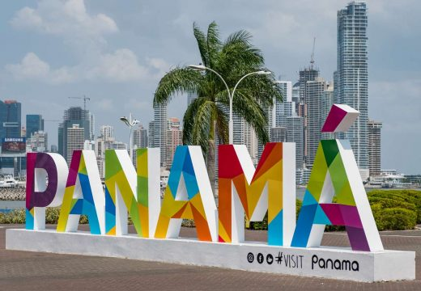

PANAMÁ
Historia y extensión territorial
La ciudad de Panamá fue fundada el 15 de agosto de 1519 por Pedro Arias Dávila, siendo la primera ciudad española en las costas del Mar del Sur u Océano Pacífico y la más antigua de Tierra Firme que existe hasta nuestros días como ciudad., Nicaragua tiene una extensión territorial de 75.517 km2.
Provincias

1.Bocas del Toro: Bocas del Toro
2.Coclé: Penonomé
3.Colón: Colón
4.Chiriquí: David
5.Darién: La Palma
6.Herrera: Chitré
7.Los Santos: Las Tablas
8.Panamá: Ciudad de Panamá
9.Veraguas: Santiago
10.Panamá Oeste: La Chorrera
Lugares turísticos

1.Canal de Panamá (Provincia de Panamá)
2.Bocas del Toro (Provincia de Bocas del Toro)
3.San Blas (Guna Yala)
4.Panamá Viejo (Ciudad de Panamá)
5.Colón (Provincia de Colón)
6.Isla de las Flores (Provincia de Panamá)
7.Casco Antiguo (Ciudad de Panamá)
8. Portobello (Colón)
Simbolos patrio
1. Bandera Nacional
2. Escudo de Armas